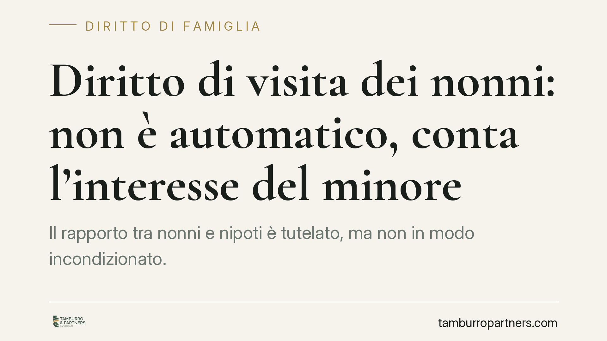

Diritto di visita dei nonni: non è automatico, conta l'interesse del minore
Il rapporto tra nonni e nipoti è tutelato, ma non in modo incondizionato. Un orientamento della Cassazione ribadisce che il diritto di visita degli ascendenti cede di fronte all'interesse superiore del minore. Non basta l'assenza di un pregiudizio: occorre valutare se la frequentazione rechi un beneficio concreto alla crescita del bambino. Vediamo cosa dice la norma e cosa cambia nei conflitti familiari.

Il caso e l'orientamento della Corte
La questione è ricorrente: i genitori impediscono ai nonni di frequentare il nipote, oppure uno dei rami familiari viene progressivamente escluso dopo una separazione. I nonni possono rivendicare un diritto a vedere il minore? E fino a che punto può spingersi?
La giurisprudenza di legittimità ha affrontato più volte il tema. L'indirizzo che qui segnaliamo — da verificare nella sua esatta portata con lettura integrale della pronuncia — si muove in una direzione precisa: il diritto di visita degli ascendenti non è un diritto assoluto né automatico. Il suo riconoscimento passa sempre attraverso il filtro dell'interesse del minore.
Il punto qualificante dell'orientamento è il seguente: non è sufficiente dimostrare che la frequentazione non arrechi un danno al bambino. Occorre valutare in positivo se quel rapporto risponda a un suo reale beneficio, in termini di arricchimento affettivo e di sviluppo della personalità. Il baricentro, quindi, si sposta dalla posizione dell'adulto che rivendica il legame all'interesse concreto del minore.
Inquadramento normativo
La sede propria del diritto di visita degli ascendenti è l'art. 317-bis del codice civile. La norma riconosce agli ascendenti il diritto di mantenere rapporti significativi con i nipoti minorenni. In caso di impedimento, l'ascendente può rivolgersi al giudice, che adotta i provvedimenti più idonei nell'esclusivo interesse del minore.
È importante leggere con attenzione la formula normativa: il diritto non è del nonno in quanto tale, ma è funzionale a un rapporto significativo. Spetta al giudice verificare, caso per caso, se quel rapporto esista e meriti tutela.
L'art. 317-bis c.c. va letto nel contesto dell'art. 337-ter c.c., che, nell'ambito dei provvedimenti sull'affidamento, afferma il diritto del minore a conservare rapporti equilibrati con entrambi i genitori e con gli ascendenti e i parenti di ciascun ramo genitoriale. Si tratta di una norma di contesto: delinea il principio dell'interesse del minore ai legami familiari, ma non è la sede tecnica dell'azione dei nonni, che resta l'art. 317-bis.
Quando la frequentazione risulti pregiudizievole, può inoltre venire in rilievo l'art. 333 c.c., che consente al giudice di adottare provvedimenti limitativi a tutela del minore in presenza di condotte dannose.
Cosa cambia in concreto
L'impostazione centrata sull'interesse del minore ha ricadute diverse a seconda della posizione coinvolta.
Per i nonni. Non è sufficiente invocare il legame di sangue o lamentare l'esclusione. Davanti al giudice rileva la dimostrazione di un rapporto effettivo, continuativo e capace di arricchire la crescita del bambino. L'assenza di conflittualità, da sola, non fonda il diritto di visita.
Per i genitori. Il potere di regolare le frequentazioni del figlio non è illimitato. Impedire del tutto il rapporto con i nonni richiede ragioni serie e verificabili, non un mero contrasto personale tra adulti. Allo stesso tempo, i genitori possono legittimamente opporsi quando la frequentazione sia fonte di tensione o pregiudizio per il minore.
Per il giudice. La decisione non è una scelta tra i diritti contrapposti degli adulti. È una valutazione dell'interesse del minore, da compiere in concreto, tenendo conto dell'età del bambino, della qualità del legame preesistente e del contesto familiare complessivo.
Il messaggio di fondo è chiaro: il conflitto tra generazioni non si risolve stabilendo chi ha ragione tra adulti, ma chiedendosi cosa serva davvero al bambino.
Cosa fare in concreto
- Verificare se esiste un rapporto nonni-nipote già consolidato: la tutela presuppone un legame significativo, non astratto.
- È opportuno raccogliere e documentare elementi concreti della relazione (frequentazioni abituali, momenti condivisi, ruolo di cura) prima di rivolgersi all'autorità giudiziaria.
- Valutare percorsi di mediazione familiare prima del contenzioso: spesso l'impedimento nasce da conflitti tra adulti risolvibili senza processo.
- Ricordare che il parametro decisivo è l'interesse del minore: ogni iniziativa va calibrata su di esso, non sulla rivendicazione dell'adulto.
- Rivolgersi a un professionista per una valutazione del caso specifico, poiché l'esito dipende da circostanze concrete non generalizzabili.
---
Contributo informativo a cura di Tamburro & Partners - Avv. Giuseppe Tamburro. Non costituisce parere legale.
Ogni famiglia ha il suo equilibrio.
Separazione, divorzio, affidamento, assegno: se vuoi un confronto riservato su una specifica situazione, scrivi allo studio. Ti rispondiamo entro un giorno lavorativo.